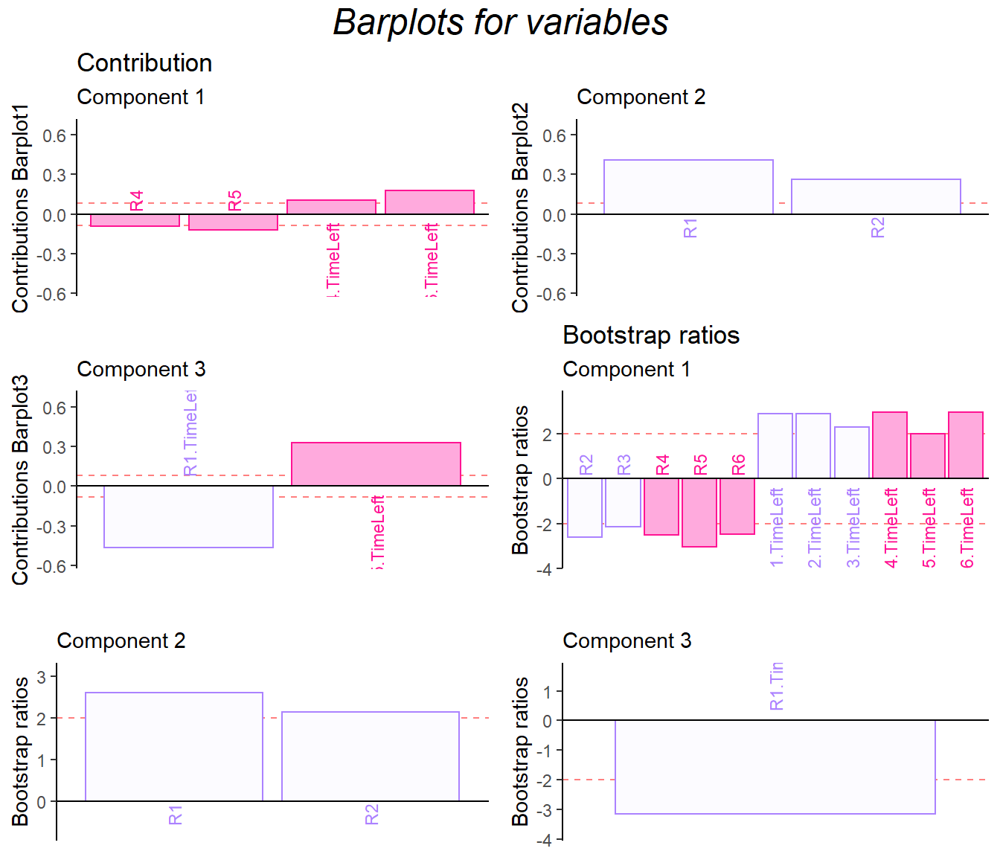

Chapter 9 Partial Least Square
9.1 Introduction of PLS-C
The full name of the PLS-C is Partial Least Square Correlation, which is a technique to process two different kinds of data tables. Personally I have special interest in this method because it could help me find out the bridge between brain response and behaviors. In one sentence, PLS-C is helping me to extract commonalities between two data sets. During the analysis, PLS will generate latent variables and salience for data sets respectively. The latent variable is as same as the factor scores and the salience is the loading in previous MSA method.
PLS has several different modalities. When its goal is to predict one data table the other one, it is called partial least square regression; PLS also has a version for qualitative data, which is called PLS-CA. Today in our example, we will focus on PLS-C, to investigate the commonality between two cognitive data table.
9.2 Computation
pls.data1 <- exp.neg[7:18]
pls.data2 <- exp.neg[19:35]
res.PLS <- tepPLS(DATA1 = pls.data1,
scale1 = "SS1",
center1 = TRUE,
DATA2 = pls.data2,
scale2 = "SS1",
center2 = TRUE,
DESIGN = exp.neg$group,
graphs = FALSE)
eigs <- res.PLS$TExPosition.Data$eigs
tau <- res.PLS$TExPosition.Data$t
fs <- res.PLS$TExPosition.Data$fi
cj <- res.PLS$TExPosition.Data$cj
ci <- res.PLS$TExPosition.Data$ci
fj <-res.PLS$TExPosition.Data$fj
lx <- res.PLS$TExPosition.Data$lx
ly <- res.PLS$TExPosition.Data$ly
p.pls <- res.PLS$TExPosition.Data$pdq$p
q.pls <- res.PLS$TExPosition.Data$pdq$q9.3 Heatmap
From the heatmap, I found out that R1-R6 is significantly negative correlated with time usage R1-R6, which means that the higher game performance the participants have, the low time they used.
9.4 Scree Plot
The permutation test indicated that the first dimension is more stable than second one.
9.5 Latent Variables
However, from the latent variable plot, I found out that the lv 2 gave me the best separation among groups.


9.6 Salience
The salience results gave back to me similar information with previous analysis.
In the dimension 1:
- data1: contrast of collective behavor and time usage
- data2: helpful, trust vs attitude, take_advantage
In the dimension 2:
- data1: the first half of the game vs R6
- data2: SAT & empathy vs helpful, trust and attitude
# PLS-P
laDim = 1
ctrJ.1 <- PrettyBarPlot2(p.pls[,laDim],
threshold = 1 / NROW(p.pls),
font.size = 3,
signifOnly = TRUE,
horizontal = TRUE,
color4bar = m.color.design[1:12],
main = 'Salience',
ylab = paste0('Salience', laDim),
ylim = c(1.2*min(p.pls), 1.2*max(p.pls))
) + ggtitle("P-PLS",subtitle = paste0('Component ', laDim))
### plot contributions for component 2
laDim =2
ctrJ.2 <- PrettyBarPlot2(p.pls[,laDim],
threshold = 1 / NROW(p.pls),
font.size = 3,
color4bar = m.color.design[1:12],
signifOnly = TRUE,
horizontal = TRUE,
main = 'Salience',
ylab = paste0('Salience', laDim),
ylim = c(1.2*min(p.pls), 1.2*max(p.pls))
)+ ggtitle("",subtitle = paste0('Component ', laDim))
laDim =3
ctrJ.3 <- PrettyBarPlot2(p.pls[,laDim],
threshold = 1 / NROW(p.pls),
font.size = 3,
color4bar = m.color.design[1:12],
signifOnly = TRUE,
horizontal = TRUE,
main = 'Salience',
ylab = paste0('Salience', laDim),
ylim = c(1.2*min(p.pls), 1.2*max(p.pls))
)+ ggtitle("",subtitle = paste0('Component ', laDim))
gridExtra::grid.arrange(as.grob(ctrJ.1), as.grob(ctrJ.2),as.grob(ctrJ.3),
ncol=1, top = textGrob("PLS-P Salience",gp=gpar(fontsize=18,font=3)))## PLS-Q
laDim = 1
ctrJ.1 <- PrettyBarPlot2(q.pls[,laDim],
threshold = 1 / NROW(q.pls),
font.size = 3,
signifOnly = TRUE,
horizontal = TRUE,
color4bar = m.color.design[13:29],
main = 'Salience',
ylab = paste0('Salience', laDim),
ylim = c(1.2*min(q.pls), 1.2*max(q.pls))
) + ggtitle("Q-PLS",subtitle = paste0('Component ', laDim))
### plot contributions for component 2
laDim =2
ctrJ.2 <- PrettyBarPlot2(q.pls[,laDim],
threshold = 1 / NROW(q.pls),
font.size = 3,
color4bar = m.color.design[13:29],
signifOnly = TRUE,
horizontal = TRUE,
main = 'Salience',
ylab = paste0('Salience', laDim),
ylim = c(1.2*min(q.pls), 1.2*max(q.pls))
)+ ggtitle("",subtitle = paste0('Component ', laDim))
laDim =3
ctrJ.3 <- PrettyBarPlot2(q.pls[,laDim],
threshold = 1 / NROW(q.pls),
font.size = 3,
color4bar = m.color.design[13:29],
signifOnly = TRUE,
horizontal = TRUE,
main = 'Salience',
ylab = paste0('Salience', laDim),
ylim = c(1.2*min(q.pls), 1.2*max(q.pls))
)+ ggtitle("",subtitle = paste0('Component ', laDim))
gridExtra::grid.arrange(as.grob(ctrJ.1), as.grob(ctrJ.2),as.grob(ctrJ.3),
ncol=1, top = textGrob("PLS-Q Salience",gp=gpar(fontsize=18,font=3)))9.7 Bootstrap Ratio Barplot
The bootstrap ratio gave me back the similar info on the two data sets.
res.Boot4PLSC <- Boot4PLSC(pls.data1, # First Data matrix
pls.data2, # Second Data matrix
nIter = 1000, # How many iterations
Fi = fs,
Fj = fj,
nf2keep = 3,
critical.value = 2,
# To be implemented later
# has no effect currently
alphaLevel = .05)
plot.cb(cj=cj,
fj=fj,
col = m.color.design[13:29],
boot.ratios = res.Boot4PLSC$bootRatios.j,
fig = 3,
colrow = "row",
horizontal = TRUE,
fontsize = 3,
signifOnly = TRUE)plot.cb(ci,
fs,
col = m.color.design[1:12],
boot.ratios = res.Boot4PLSC$bootRatios.i,
fig = 3, colrow = "row",
horizontal = TRUE,
fontsize = 3,
signifOnly = TRUE)